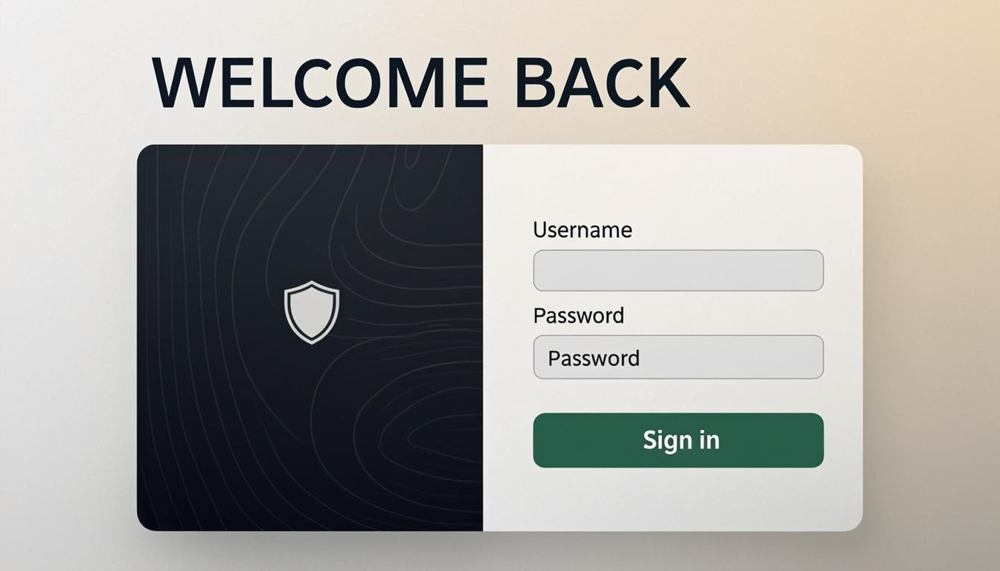
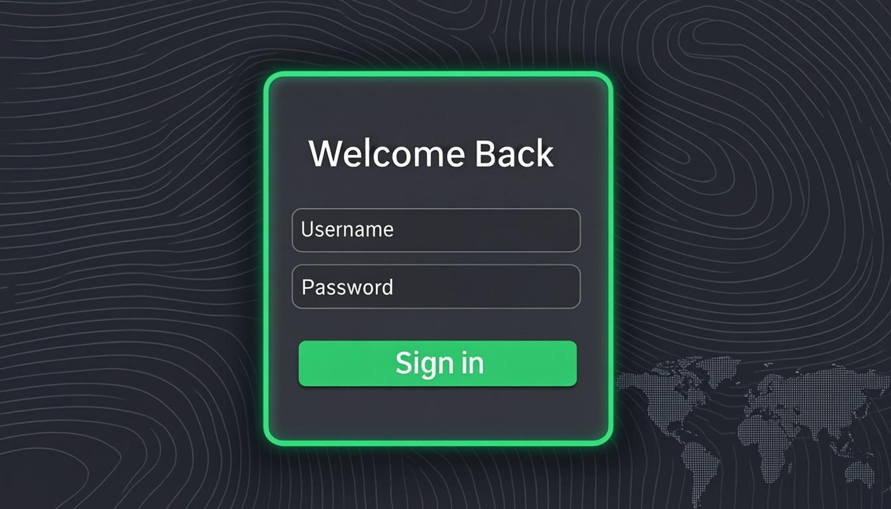
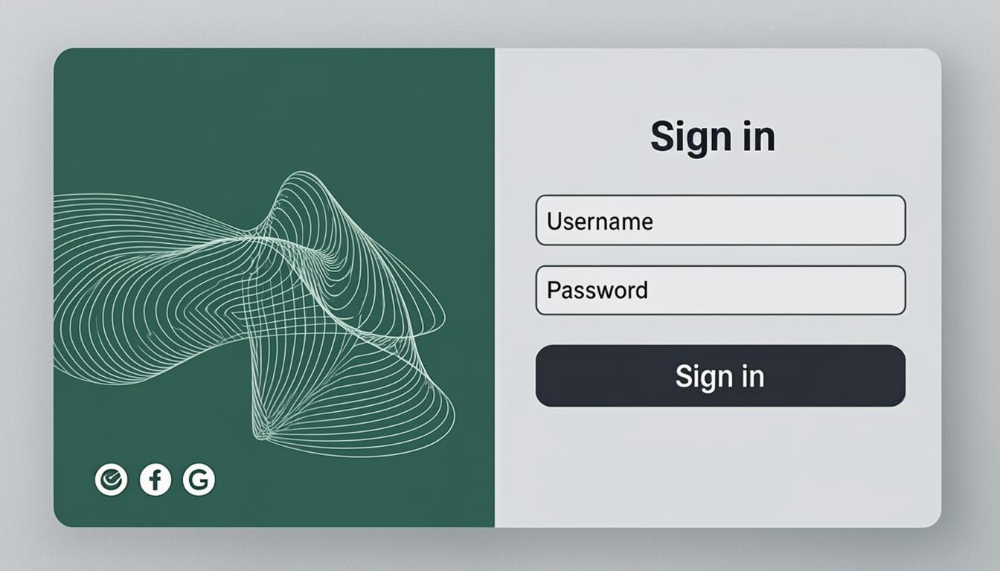
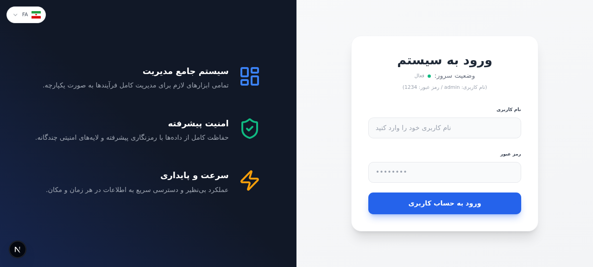
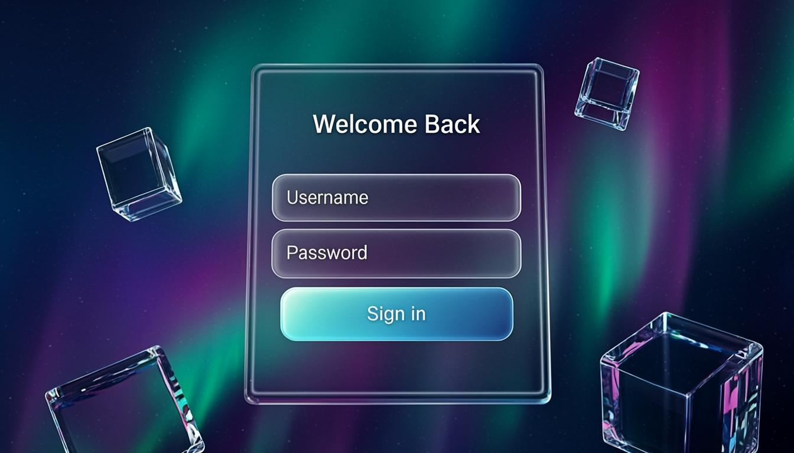
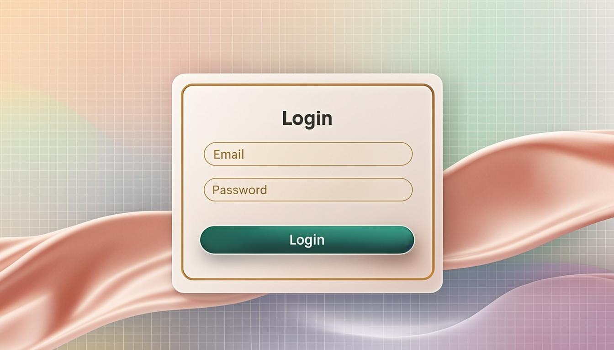
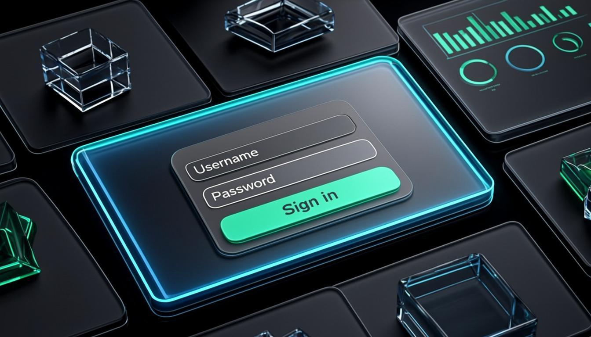

پرونده مشاوره طراحی صفحه ورود — نسل دوم با رویکرد سازمانی و شرکتی، بر پایه ترندهای ۲۰۲۶ (مینیمالِ مجلل، بافتهای ظریف، تایپوگرافی قوی) — در پیادهسازی واقعی، همه متون فارسی، راستچین و با فونت وزیرمتن اجرا خواهند شد.
رویکرد کاملاً متفاوت: حذف افکتهای فانتزی، تمرکز بر اعتماد، آرامش و حرفهای بودن — الهام از محصولات سازمانی برتر مثل Stripe و Linear. مینیمالِ مجلل با تایپوگرافی قوی و یک رنگ برند مطمئن.

کارت دونیم: پنل تیره با نقشه توپوگرافی ظریف و آیکون سپر امنیت + فرم روشن با دکمه زمردی؛ تیتر بزرگ و مطمئن.

اسلیت تیره با بافت خطوط توپوگرافی و نقشه جهانی نقطهای؛ کارت با حاشیه زمردی هالهدار و دکمه سبز.

پنل زمردی با مجسمه خطی سهبعدی و جای آیکونهای اعتماد + فرم روشن با دکمه اسلیت تیره.


کارت گلس شناور در مرکز، پسزمینه اورورای زمردی-بنفش متحرک، مکعبهای شیشهای شناور با پارالاکس.

پسزمینه عاجی با گرادیانهای پاستلی، کارت سفید با لبه طلایی و دکمه زمردی؛ ابریشم سهبعدی در پسزمینه.

گرید بنتو از پنلهای شیشهای با ویجتهای KPI و نمودار؛ فرم در پنل مرکزی با حاشیه نورانی.